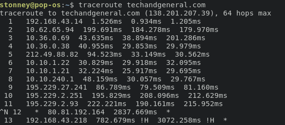

7 min read
On 25th February 2012, the T.E.A.M.S(The East African Marine System) cable was accidentally cut by a dredging ship carrying some works for the Kenya Ports Authority at Mombasa Offshore. This lead to internet 'blackouts' for Kenya and the better part of East African networks at least for upstream internationally bound traffic, and it did not help that T.E.A.M.S was at the time carrying re-routed Eastern Africa Submarine Cable System (EASSy) traffic after the were three cable breaks in the red sea on 17th February, just a week before!
There have gone on to occur subsequent cable breaks. On 27th April of the same year, T.E.A.M.S cable suffered another blow, attributed to the same dredging activities at Mombasa. Since then there were measures put in place to safeguard users against outages and ensure 100% uptime.
East Africa as a whole has taken leaps in terms of technology. It has been dubbed the silicon savannah. We are now very dependent on high-speed internet connectivity. Businesses operate completely off the cloud. Remote working is on the rise. Digital education has now become a possibility with pilot programs underway. Streaming platforms which are international, regional, and local the likes of Netflix, Hulu, Showmax, and airtel tv are catching on. We depend on the web for entertainment and Online gaming. Not to mention Kenyans are known for their social media footprint #KOT. This in turn generates a lot of traffic.
The T.E.A.M.S cable was designed to have a capacity of
80Gb/s upgradable to 640Gb/s as a contingency. To put this in context
8bits equal one byte,80Gigabits per second would mean a pipeline of
1 actual Gigabit per second.
That's a lot of initial throughput, imagine the amount of system expansion. During the actual installation,
the designed capacity of the system was increased to 1.2 Tb/s and
the initial capacity to 120 Gbit/s.
An unexpected sharp rise in the
demand for international bandwidth pushed the parties to the drawing
board to consider upgrading the cable system earlier than originally
planned. Kenya and the East African countries are increasingly
pushing more traffic via the TEAMS cable, because of the perceived
better transmission quality (very low latency) and reliability of
the system. Especially during to Covid19 pandemic, where internet
traffic volume has seen a significant increase,
Moses Kemibaro/
covers this
here .
When you request an international website by
loading it on your mobile browser the path taken to and from your
device largely depends on your carrier network. To better
understand this we shall use this blog
(techandgeneral.com)
with the IP address (138.201.207.39) that is currently being
hosted in Hamburg, Germany by hosting provider, safaricom.co.ke (45.223.18.17) hosted
in Safaricom house Nairobi, and youtube.com (216.58.223.78)
which is a dynamic IP hosted in Mountain View California USA.
They all qualify as international traffic.

My current cellular
provider, Telkom happens to be among the largest ISP's in the
region owning and controlling large portions of the network.
By performing a traceroute and its more advanced Paris-traceroute
command which displays possible routes (paths) and measuring transit
delays of packets across an Internet Protocol (IP) network
we can see the clear path and can map out the backbone
network in Kenya.
The Kenya ICT authority implemented the National Optical Fibre Backbone (NOFBI). The project that was partially funded by the Chinese government and in its first phase aimed to connect all the 47 Kenyan counties to the national Optical Fibre network. NOFBI Phase 1 is already in use in the national government, and in firms such as Telkom, my current ISP, Safaricom, Jamii Telecom, and KENET, utilizing more than 3,000km of the cable.
NOFBI Phase 2 was to further increase the coverage and safety protection
of the existing transmission network,(an extra layer of redundancy)
to enable the local government departments of the 47 counties to form
an efficient transmission network with the central government. The
construction of NOFBI Phase 2 began in September 2014.
The Kenyan Optical cable goes on to form the backbone of most of the Ugandan
and South Sudan networks through governmental agreements.
Back to
my three examples.
Let's track my request to the three websites and all their responses.
And as a disclaimer, I have shown my IP, don't try anything fishy :-)
The request goes through my default gateway, bouncing off the nearest
base station(commonly known as boosters), and then gets into the shared
fiber network. A local mobile switching station directs it into internal
Telkom networks. Large data centers that are owned by Telkom are found in
Eldoret. A few bounces in the network while trying to determine the best exit
points.
If the traffic is not inbound it is typically forwarded to the KIXP
(Kenya Internet Exchange Point). The Kenya Internet Exchange Point (KIXP)
is the facility that keeps Kenyan Internet traffic in Kenya. It allows Kenyan
Internet Service Providers to easily exchange traffic within Kenya, without
having to send those messages across multiple international hops to reach
their destination while improving connectivity and services for their customers.
The KIXP and Internet exchange points are wide topics and need individual
discussions later on. The concept of Internet exchange points is built
around interconnecting internet service providers at one point and
utilizing dynamic routing techniques, exchanging traffic destined for
local services providers connected to the exchange point locally without
utilizing the expensive international link capacity. Before an IXP,
all inter-ISP traffic, both domestic and foreign bound must be exchanged
through exchanges outside the country. ISPs, therefore, send all outbound
traffic through their international links most commonly satellite and
occasionally submarine fiber(T.E.A.M.S and EASSY). International links
entail both upstream and downstream packet traffic, the costs of which
must be borne by either the sending or the receiving ISP.
With the presence of an IXP, domestic traffic is peered at the exchange point,
freeing the international links from congestion, enhancing faster speeds of
data, and reducing costs and delays.
KIXP is deeply integrated with the National Optical Fibre Network with
all major ISPs peering. Our web request is exchanged between Telkom and
Safaricom's networks.
Safaricom's routing protocols follow the same
scheme with some nodes occasionally in Isiolo(happens once in a while ). Note that this data/
request routing protocols are highly dynamic and change in a matter
of seconds. Data packets will always follow the shortest and most
efficient path to their destination. Paris-traceroute and legacy
traceroute have different outputs, why? Several ISPs are known to
make their routers stealth to traceroute in two ways: they either
don't decrement TTL in IP packets (making themselves IP wormholes)
or they don't respond to expired TTL while still forwarding ICMP
.(ping requests)The reason is to keep their internal network topology
private. That's all. Issuing traceroutes from/to multiple sources/destination
reveals information on network topology, which is something not everyone
appreciates.
I can understand this from a network security point of
view. After traversing the massive Safaricom Kenya Network The request
gets to the web server hosting the site...pic... Internationally
bound traffic takes a very different approach to this. What path
does data take after the Kenya Internet Exchange Point? The short
answer is iColo data center Mombasa Highway Miritini. It's one of
the few tier 3 certified data hubs in Kenya. It's part of the
Mombasa Internet Exchange project. Mombasa IXP
Mombasa IXP was launched in June 2016 and has been operational ever since.
There are 2 sites responsible for routing namely:
i) ICOLO Data Centre
ii) Telephone House Data Centre
I have not been able to directly get the IP addresses of routers
and servers from these sites but they sit on the edge of the Kenyan
internet. Where we connect to the rest of the world, literally.
Peering in Mombasa provides:
1. Safe and secure connections to various members
2. Peering opportunities with some of the biggest networks, CDNs, and carriers in the world.
3. Reduced transit costs, localized traffic, and optimized routing paths.
Current Peers in Mombasa
1. Google
2. Facebook
3. Hurricane Electric
4. Lyca digital
5. MTN
6. MyISP
7. China Telcom
So this means that that google search, youtube viral video,
and your Facebook feed might not be served internationally
from California, USA but cached in Mombasa. When we go even
further, depending on where the cable is laid out, the cable
coming in from the Indian ocean to the landing station might
be advertised or not. Most of the time cable consortium companies
try to hide the cable as much as they can so that only those
who need to know – municipalities, port authorities, and shipping companies –
are informed of the exact route of the cable. I don't see TG on the
list but :-) the cable lands on Mombasa island near the harbor.
The actual landing site.
techandgeneral(138.201.207.39) and youtube(216.58.223.78)requests generally
go first through the United Arab Emirates. UAE-IX in Dubai is the
largest carrier and data center-neutral Internet Exchange for the
Middle East and since T.E.A.M.S lands on Fujairah, UAE's beach I
ran an IP locator on the node and it returned a known UAE internet
hub.
Then the traffic is most probably directed to the DE-CIX
which is the german version of KIXP (Deutscher Commercial
Internet Exchange) is the carrier- and data-center-neutral
internet exchange point (IXP) situated in Frankfurt, Germany.
Fun fact (DE-CIX)is now the single largest exchange point
worldwide in terms of average traffic throughput of 6.1
Tbit/s (terabits per second) in September 2020. So yeah it
handles most of European,middle-east, and by extension East
Africa's upstream traffic. Both requests are then forwarded
to their respective web hosting servers and a response is
returned following the same path. Wow, that was a lot.
Network Junkies have made it this far ---laughing emoji---
.Now keep in mind that all this happens in a matter of seconds
if not milliseconds of you clicking a link requesting a webpage
or opening an app. Keep that in mind and use the internet
for good, like online gaming #PUBG. It always baffles me
how complex the internet is and how all these moving
parts fit together to give us the experience we have.
On the flip side, hops, paths, and routes have become
tougher to track. Even for network administrators who
do it for troubleshooting purposes. This is because of
dynamic routing tables, router obfuscation, blocking
of high UDP ports, and load balancing routers. We sha
ll follow up with a piece on Kenyan datacentres and h
ow the country is rising to be a digital hub. Thank
y
ou and remember to wash your hands, Keep social dista
nce and stay safe.


{kind=link}
{kind=link}
{kind=link}